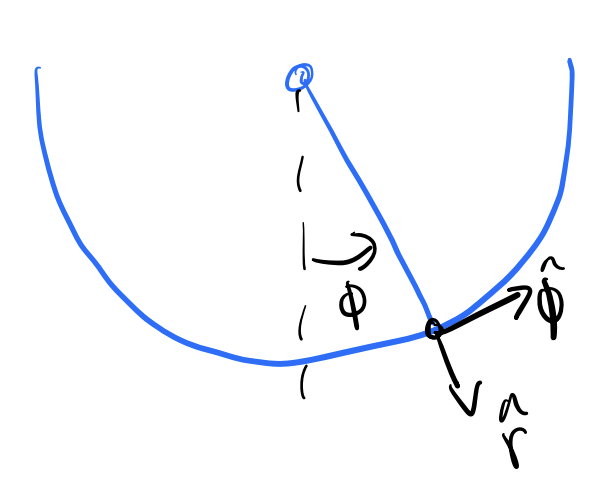
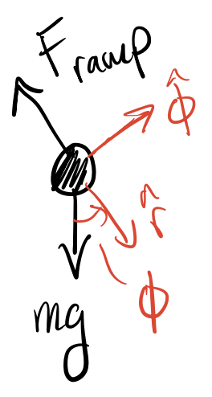
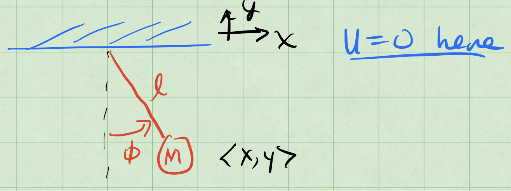

12 - The Core Principle of Classical Mechanics? The Principle of Least Action#

Learning Goals#
After studying Lesson 12, you should be able to:
Derive and interpret the equations of motion in polar coordinates, identifying the radial and angular components of forces and accelerations.
Analyze constrained motion, such as a skateboarder on a circular track, by applying Newton’s laws in polar coordinates and simplifying equations based on system constraints.
Formulate and solve the Lagrangian for systems with constraints, such as the plane pendulum, using generalized coordinates to simplify the analysis.
Compare and contrast Newtonian and Lagrangian mechanics, focusing on their approaches to deriving equations of motion and their applicability to different systems.
Explore the conditions under which constrained systems exhibit simple harmonic motion and solve for the motion using small-angle approximations.
Newtonian Mechanics is an incredibly useful model of the natural world. In fact, it wasn’t until the mid 1970s that we were able to truly test Einstein’s gravity as a true replacement for Newton. That being said, for most terrestrial situations (macroscopic objects moving at low speeds), Newton’s mechanics is very good. However, the problem with Newton is that it requires a few things:
We must be able identify each interaction on the object or model an average behavior from many smaller interactions (e.g., models of friction vs. detailed E&M forces)
We must be able to mathematically describe the size and direction of the interaction at all times we want to model
We must be able to vectorially add the interactions to produce the net force \(\sum_i \vec{F}_i = \vec{F}_{net}\).
In many cases, we can do this. But consider a bead sliding inside a cone. How would you write down the contact force between the cone and the bead for all space and time?
This is where Lagrangian Mechanics comes in. It is a powerful and elegant way to describe the motion of particles and systems. It is based on the Calculus of Variations, a field of mathematics that is concerned with finding the path that minimizes or maximizes (called “extremization”) a certain quantity. In the case of Lagrangian Mechanics, the quantity we are extremizing is the action.
The Principle of Least Action (19 minute video)
The video below discusses the concept of the Principle of Least Action, which is the foundation of Lagrangian Mechanics.
Introduction to Lagrangian Dynamics (10 minute video)
The concept of Lagrangian dynamics can be a bit abstract at first, especially if you are used to Newtonian mechanics. The basic idea is that instead of focusing on forces, we focus on the kinetic and potential energy of the system to derive the equations of motion. The procedure to compute the equations of motion is straghtforward, but the set up of these problems can be tricky at first.
The basic steps are:
Identify the generalized coordinates: These are the variables that describe the configuration of the system (e.g., angles, distances).
Write down the Lagrangian: The Lagrangian \(\mathcal{L}\) is defined as the difference between the kinetic energy \(T\) and potential energy \(V\) of the system:
\[ \mathcal{L} = T - V \]Apply the Euler-Lagrange equations: The equations of motion are derived from the Lagrangian using the Euler-Lagrange equations:
\[ \frac{d}{dt} \left( \frac{\partial \mathcal{L}}{\partial \dot{q}_i} \right) - \frac{\partial \mathcal{L}}{\partial q_i} = 0 \]
where \(q_i\) are the generalized coordinates and \(\dot{q}_i\) are their time derivatives (velocities).
But we need practice applying these steps to get comfortable with the process. Parth G. has a lovely video below about the basics of Lagrangian Dynamics. We will do a lot of this in class and go over many examples. This video is a nice introduction to the concept.
Introduction to Lagrangian Mechanics#
Deriving Newton’s Second Law in Plane Polar Coordinates#
To get started with Lagrangian mechanics, we will start by deriving Newton’s second law in plane polar coordinates. This is not a necessary step for anything we will do in Lagrangian mechanics, but it is a good way to get comfortable with the coordinate system. And it will also help us see how we can think about forces in a coordinate system that is not Cartesian because Lagrangian mechanics can be used with generalized coordinates.
We start by sketching the location of a particle in plane polar coordinates, as shown below:

Fig. 33 Position vector in polar coordinates#
Error
Redraw as vector graphic and post SVG
The red arrow represents the position vector \(\vec{r}\), which is a length \(r\) from the origin at an angle \(\phi\) from the \(x\)-axis. At the tip of the vector we have drawn the Cartesian unit vectors \(\hat{x}\) and \(\hat{y}\) in blue, and the polar unit vectors \(\hat{r}\) and \(\hat{\phi}\) in green. Notice that the polar unit vectors are rotated by an angle \(\phi\) from the Cartesian unit vectors. We can simply write the position vector in terms of these unit vectors as:
We start by taking the derivative of the position vector \(\vec{r}\) with respect to time \(t\) to find the velocity \(\vec{v}\). Using the product and chain rules, we have:
What is \(\frac{d\hat{r}}{dt}\)?
We note that the green unit vectors for \(\hat{r}\) and \(\hat{\phi}\) are not constant, they change direction as the particle moves. We can write them in terms of the Cartesian unit vectors, which do not change with time, as follows:
So now,we can differentiate \(\hat{r}\) with respect to time \(t\) using the chain rule:
And so our expression for the velocity \(\vec{v} = \frac{d\vec{r}}{dt}\) becomes:
We differentiate again to find the acceleration \(\vec{a} = \frac{d\vec{v}}{dt}\). Using the product and chain rules again, we have:
We found \(\frac{d\hat{r}}{dt} = \dot{\phi} \hat{\phi}\) in the previous step, and we also need to find \(\frac{d\hat{\phi}}{dt}\). We can differentiate \(\hat{\phi}\) in a similar way:
We return to our expression for the acceleration \(\vec{a}\):
Using Newton’s second law, we know that the acceleration \(\vec{a}\) is equal to the net force \(\vec{F}\) divided by the mass \(m\) of the particle:
Equating the two expressions for \(\vec{a}\), we have:
Where we can identify the radial and angular components of the net force as:
This gives us the net force in terms of the radial and angular components in polar coordinates.
Skateboard Example#
Let’s see the utility of using polar coordinates by applying it to a skateboarder moving on a circular track. In this case, the skateboarder is constrained to move along a circular path of radius \(r\). Consider a skateboarder moving on that circular track as shown below:
{kind=link}

Fig. 34 Skateboarder on a circular track#
Error
Redraw as vector graphic and post SVG
At this point in the track, we can draw the free body diagram of the skateboarder. The forces acting on the skateboarder are the Earth’s gravitational force and the normal force of the ramp.
{kind=link}

Fig. 35 Free body diagram of skateboarder#
Error
Redraw as vector graphic and post SVG
We can use Newton’s law in polar coordinates to analyze the forces acting on the skateboarder. This is because the normal force is always perpendicular to the surface of the ramp and will only have a radial component in polar coordinates. Thus we need only decompose the gravitational force into its radial and angular components.
The sum of all forces in the radial direction are given by:
We note that \(r=R\), that is the radius is fixed, so
Therefore, we can simplify the equation to:
In the tangential direction, we have:
Because \(r=R\) is constant, we have \(\dot{r} = 0\). Thus, the equation simplifies to:
Or, we can express this as:
The Normal Force as a Function of Time#
We can solve this equation using numerical methods to find \(\phi(t)\), the angular position of the skateboarder as a function of time. This can be used to then find the normal force as a function of time by substituting \(\phi(t)\) back into the radial equation we derived above:
Note that this force is a force of constraint because it is not an external force acting on the skateboarder but rather a force that arises from the constraint of the circular track. These forces are important in mechanics and can be analyzed using Lagrangian mechanics as well. They are not typically conservative forces and do not have a potential energy associated with them.
Simple Harmonic Motion#
If we consider small angles, i.e., \(\sin(\phi) \approx \phi\), then the equation of motion for \(\ddot{\phi}\) becomes:
on (SHM) with angular frequency \(\omega = \sqrt{\frac{g}{R}}\). Thus, for small angles, the motion of the skateboarder on the circular track will exhibit SHM. The solution to this equation will be:
where \(A\) and \(B\) are constants determined by the initial conditions of the problem.
Newton’s Laws and Equations of Motion#
So far you have studied the work of physics from the perspective of Newtonian Mechanics, which is based on forces and their effects on motion. The idea behind using Newton’s Laws is that:
We can identify all the interactions with a body (i.e., all the forces and torques acting on it).
We can write models of those interactions as mathematical expressions (i.e., force laws like \(\vec{F} = -k \vec{x}\) for a spring or \(b v^2\) for drag).
We can vectorially sum all the individual interactions to find the net result (i.e., \(\sum \vec{F}_i = \vec{F}_{net}\)).
We can then use Newton’s second law to find the acceleration of the body, \(\vec{a} = \frac{\vec{F}_{net}}{m}\).
This process has produced our equations of motion for a system. Which we then investigated in detail throughout the course.
Spring Example
We have solved the spring problem many times using Newton’s Laws. The spring (\(k\)) is attached to a block of mass \(m\) on a frictionless surface. There is a dashpot connected to the block with a damping coefficient \(b\). We know the drag force is opposite the motion. We can write:
Thus, the net force on the block is:
We can then substitute this into Newton’s second law to find the acceleration of the block:
And thus our equation of motion for the block is:
Lagrangian Formulation#
The Lagrangian Formulation is rooted in classical optimization, but it is equivalent to Newton’s work. However, it uses energy (a scalar) to do so. This means we can exploit coordinate transformations that do not change the scalar value of the energy.
Epistemologically, Lagrange’s approach is an exploration of phase space to determine paths the dynamical system can take. You can think of this as one level of abstraction above plotting the known phase space, because we don’t yet have the equations of motion.
Let’s try an example we have seen before, the spring-mass system.
Example: Spring-Mass System#
As you will learn, to get the EOM for a non-dissipative system, we form a function called the Lagrangian:
The Lagrangian is defined as:
Where:
\(T\) is the kinetic energy of the system.
\(V\) is the potential energy of the system.
For a 1D spring-mass system, we have:
Now we follow the optimization routine, which is applying the Euler-Lagrange equations to the Lagrangian. The Euler-Lagrange equation for \(\mathcal{L}(x,\dot{x},t)\) is given by:
Our Lagrangian for the spring-mass system is:
Now we can compute the necessary derivatives:
Now we can substitute these into the Euler-Lagrange equation:
This is the same equation of motion we derived using Newton’s laws for the spring-mass system.
This shows that Lagrangian mechanics can reproduce the same equations of motion as Newtonian mechanics, but it does so by focusing on the energy of the system rather than forces directly.
Why does this work?#
Lagrangian mechanics works because it is based on the principle of least action (or stationary action). This principle states that the actual path taken by a system between two points in phase space is the one that minimizes (or makes stationary) the action, which is the integral of the Lagrangian over time.
This is not magic, it’s an application of the calculus of variations. The action is a functional, and the Euler-Lagrange equations provide a way to find the stationary points of that functional. By applying these equations to the Lagrangian, we can derive the equations of motion for a system.
We can think of this as a system that evolves in time, but does so in a way that is optimal in some sense. The approach allows us to find the path the system will take by exploiting Hamilton’s principle: The path taken by a dynamical system between two points in phase space is the one that minimizes the time integral of the Lagrangian.
Mathematically,
Where \(\delta\) indicates that we are looking for a stationary point of the action integral. This is precisely the formulation of the calculus of variations, which allows us to find the path that minimizes (or makes stationary) the action integral.
So, we know that the equation that will produce the \(\mathcal{L}\) that minimizes the action integral is given by the Euler-Lagrange equations.
In fact, this approach holds in each Cartesian coordinate, so that the equations of motion can be derived in any coordinate system.
where \(x_i\) can be \(x, y, z\) if \(\mathcal{L}(x,y,z,\dot{x},\dot{y},\dot{z},t)\).
Generalized Coordinates#
As it turns out, our approach can make use of an phase coordinate \((\theta, \phi, x, y, \rho, z, \ldots)\) and their first derivatives \((\dot{\theta}, \dot{\phi}, \dot{x}, \dot{y}, \dot{\rho}, \dot{z}, \ldots)\). In fact, we can do so for any set of generalized coordinates that describe the configuration of a system. Generalized coordinates are a set of coordinates that uniquely define the configuration of a system relative to some reference configuration. We denote them as \(q_i\) where \(i\) runs from 1 to \(n\), and their time derivatives as \(\dot{q}_i\).
The generalized position is given by:
And the generalized velocity (or time derivative of the generalized coordinates) is given by:
These \(N\) coordinates would give tise to a set of \(N\) equations of motion (subject to potential reductions due to constraints). The Lagrangian can be expressed in terms of these generalized coordinates and velocities:
The Euler-Lagrange equations can then be applied to each generalized coordinate \(q_i\):
Example: Plane Pendulum#
To get some intuition for how Lagrangian mechanics works, let’s consider an example we have seen before: the plane pendulum.
A pendulum bob of mass \(m\) is attached to a fixed point by a rod of length \(l\). The bob swings in a vertical plane under the influence of gravity as shown below. We define \(U=0\) at the top of ceiling where the rod is attached.
{kind=link}

Fig. 36 Plane pendulum bob#
Error
Redraw as vector graphic and post SVG
The location of the bob is \(\langle x, y \rangle\). We can use the \(x,y\) coordinates to “naively” setup the Lagrangian and see what happens.
The kinetic energy \(T\) of the pendulum bob is given by:
The potential energy \(V\) of the pendulum bob is given by:
Note \(y\) is negative in the downward direction.
So we can write the Lagrangian \(\mathcal{L}\) as:
We will get two equations of motion from the Euler-Lagrange equations, one for \(x\) and one for \(y\). For \(x\), we have:
This suggests that the momentum in the \(x\)-direction (\(p_x= m\dot{x}\)) is conserved, which cannot be correct for a pendulum.
For \(y\), we have:
There’s no tension force? That can’t be right.
We failed to include the constraint of the pendulum! The pendulum is constrained to move along a circular arc of radius \(l\). This means that the coordinates \(x\) and \(y\) are not independent, and we cannot just use \(x,y\) as coordinates. This is a classic example of why we need to use generalized coordinates in Lagrangian mechanics.
The constraint for the pendulum is given by:
This tells us that,
where \(r=l\) is constant. So the constraint tells us that the motion of the pendulum is constrained to a circle of radius \(l\) and it provides a relationship between the velocities \(\dot{x}\) and \(\dot{y}\).
So as you might have guessed, we need to use a different coordinate system to describe the motion of the pendulum. We can use plane polar coordinates \((r, \phi)\) where \(r=l\) is constant and \(\phi\) is the angle from the vertical.
The kinetic energy \(T\) in polar coordinates is given by:
The potential energy \(V\) becomes:
Now we can write the Lagrangian \(\mathcal{L}\) in terms of the polar coordinates:
Notice that it is actually only a function of \(\phi\) and \(\dot{\phi}\), because \(r=l\) is constant.
Thus, we have a 1D equation of motion. This makes sense because the pendulum is constrained to move in a circular arc, and we can describe its motion using just one coordinate \(\phi\).
Now we can apply the Euler-Lagrange equation to find the equation of motion for \(\phi\):
And thus the \(\phi\) equation of motion becomes:
or,
As we have seen, for small \(\phi\), this reduces to simple harmonic motion: